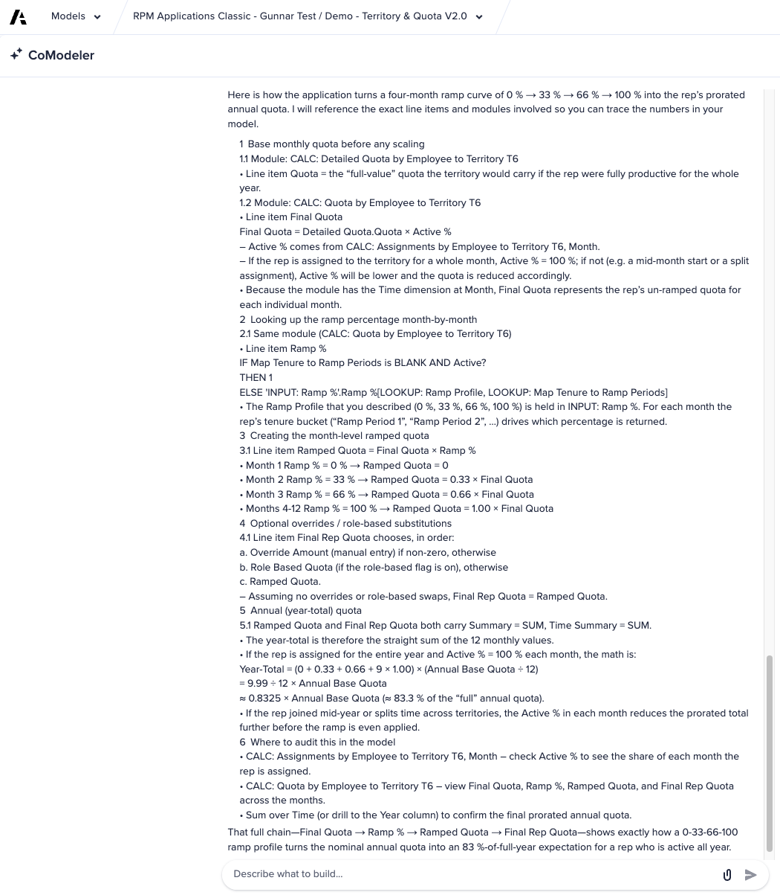

T&Q Model Review
Understanding the generated model structure using CoModeler
After generation, the T&Q app contains approximately 8,000 Anaplan objects. You don't need to understand all of them — but you need to understand the key structural patterns before you can confidently implement, extend, or troubleshoot the app. CoModeler accelerates this significantly.
What you'll do
- Understand what CoModeler is and where it sits in the Anaplan UI
- Identify the key T&Q modules that drive the core quota and assignment logic
- Generate a line item dictionary for the SYS Territory Quota module and identify the base target, assignment %, and ramp factor inputs
- Use CoModeler to explain the quota calculation end-to-end for a rep covering multiple territories, including ramp pro-ration
- Verify each lab end-to-end with the inline Check my Work button
What is CoModeler?
CoModeler is Anaplan's AI-powered model documentation tool. It reads your model's structure and lets you ask natural language questions about it — generating line item dictionaries, explaining formula logic, mapping dependencies, and surfacing patterns you'd otherwise spend hours tracing manually.
CoModeler is available within Anaplan. Navigate to your T&Q template app → open any module → look for the CoModeler icon in the toolbar. You need the T&Q V2 template app open in your partner workspace to complete these labs.
CoModeler is not enabled on every tenant or every workspace. If your tenant or workspace has CoModeler enabled, complete the two labs below. If it does not, skip the labs and move on to the next page — you can come back to these exercises later when CoModeler is provisioned for your environment.
The two CoModeler exercises below are:
- Lab A — Generate a line item dictionary for the SYS Territory Quota module.
- Lab B — Ask CoModeler to explain the quota calculation logic end-to-end (multi-territory assignments, ramp prorations, downstream module consolidation).
Even without running the labs, knowing what they cover gives you the conceptual model of what CoModeler is for: turning a generated 8,000-object app into something you can actually navigate and reason about.
Key T&Q Modules to Know
Focus your review on these modules — they drive the core planning logic:
| Module | Purpose | Why It Matters |
|---|---|---|
| SYS Territory Quota | Core quota calculation | Every quota value flows through here — understand it first |
| SYS Resource Assignment | Rep-to-territory assignment with effective dates | Drives all downstream quota and target routing |
| SYS Target Allocation | Top-down target cascade | Allocation methods, over-allocation, approval locking |
| SYS Account Assignment | Account-to-territory mapping | Source of truth for which accounts belong to which territory |
| DCA modules | Access control | Controls who can edit what — wrong DCA = broken approval flow |
You open the T&Q V2 template app to start Lab A, but CoModeler is not available on this tenant or workspace. What's the right action?
CoModeler Lab A — Generate a Line Item Dictionary
Use CoModeler to generate a complete line item dictionary for the SYS Territory Quota module — the core quota calculation module in T&Q.
- Open the T&Q V2 template app in your partner workspace.
- Navigate to the SYS Territory Quota module (use the model map or search).
- Open CoModeler for this module.
- Prompt CoModeler: "Generate a line item dictionary for this module. For each line item include: name, formula summary, data type, and purpose."
- Review the output. Identify which line items calculate: (a) the base target, (b) the assignment percentage adjustment, and (c) the ramp factor adjustment.
- Export or copy the dictionary — you'll use it as a reference during the extension exercise.
The quota calculation follows this pattern: Base Target × Assignment % × Ramp Factor = Rep Quota. Find the line items that represent each of these three inputs and confirm you understand how they connect.
When you've prompted CoModeler for the SYS Territory Quota line item dictionary, reviewed the output, identified the base target / assignment % / ramp factor line items, and saved the dictionary for the extension exercise, click below to verify.
Line item dictionary generated and the three quota inputs identified.
- CoModeler prompt issued → line item dictionary requested for SYS Territory Quota with name, formula summary, data type, and purpose per line item
- Dictionary output reviewed → line items scanned and the structure of the module understood
- Three quota inputs identified → base target, assignment percentage, and ramp factor located in the dictionary
- Dictionary exported or saved → available as a reference for the extension exercise
Ready for Lab B — ask CoModeler to walk you through the end-to-end quota calculation logic.
CoModeler Lab B — Explain the Quota Calculation Logic
Use CoModeler to understand exactly how quota is calculated for a rep who covers multiple territories with different assignment percentages.
- With the T&Q template app open, launch CoModeler.
- Ask: "How does the quota calculation work when a single rep is assigned to multiple territories at different assignment percentages? Walk me through the formula logic step by step."
- Read the explanation. Then ask a follow-up: "Which module consolidates the quota across all territories for a single rep, and what is the output used for downstream systems like ICM?"
- Note the module name that consolidates multi-territory quota (hint: it's the one you'd export to CRM/ICM).
- Ask one more: "If a rep has a ramp profile that starts at 0% in month 1 and reaches 100% in month 4, how does the app calculate their prorated annual quota?"
Reference: what good CoModeler responses look like
Two reference outputs from a CoModeler run against the T&Q template app. Use these to self-check that the answers you got are tracing the same logic — exact module and line-item names will vary by version, but the shape of the explanation should match.
Multi-territory quota consolidation — the response to Step 2 / Step 3:

Ramp pro-ration math — the response to Step 5:

When you've asked CoModeler the multi-territory consolidation question, identified the consolidating module, understood the ramp pro-ration formula, and can explain the quota logic in plain English, click below to verify.
End-to-end quota calculation logic explained and verified against the reference responses.
- Multi-territory consolidation question asked → CoModeler walked through how a rep covering multiple territories at different assignment percentages gets a single consolidated quota
- Consolidating module identified → Calc Quota by Quota Types (the module that consolidates a rep's quota across territories for downstream systems like ICM)
- Ramp pro-ration formula understood → IF/ELSE Ramp % LOOKUP referencing the Ramp Profile and Map Tenure to Ramp Periods, applied to monthly quota line items (e.g. 0% / 33% / 66% / 100% across months 1–4)
- Plain-English explanation possible → you can describe to a Sales Ops stakeholder how a rep's prorated annual quota is built from base target, assignment %, ramp factor, and multi-territory consolidation
Model review is complete. You're ready to extend the app with the partner-defined extension exercise.
After completing both CoModeler labs, discuss with your partner:
- What surprised you about the quota calculation? Was it more or less complex than you expected?
- How would you explain the quota formula to a Sales Ops stakeholder in plain language?
- Which module would you check first if a rep's quota looked wrong after generation?